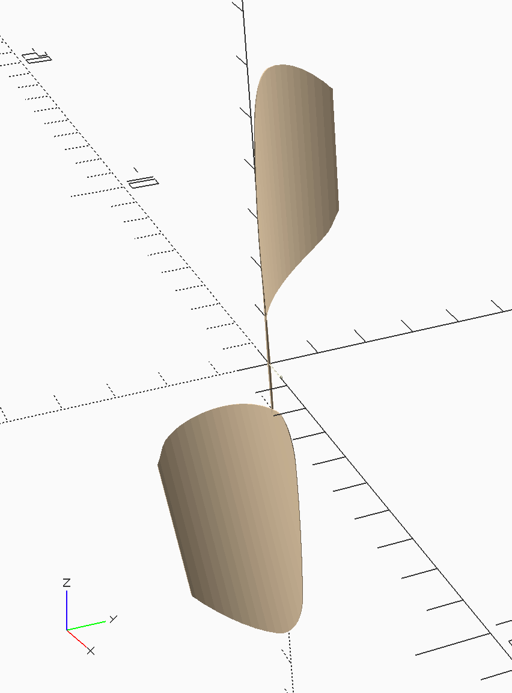

Read time: 0.8 minutes (82 words)
MMlpp Propeller¶
The propeller is a bit involved. The basic idea in this construction is to build a thin walled cylinder thrn slice out the blades from that cylinder. The prop spar is just two tapered cylinders. The wire shaft is a bit more complex, but models a bent chunk of wire.
These parts are assembled in the usual way. Here is the prop data file:
1//#####################################
2// prop-blade-data.scad
3// (c) 2021 by Roie R. Black
4//*************************************
5include <colors.scad>
6include <../constraints.scad>
7
8// Propeller dimensions
9prop_radius = max_prop_diameter/2;
10prop_pitch_angle = 40;
11prop_blade_offset = 0.5;
12
13// prop spar dimensions
14prop_spar_inner_radius = 1/32;
15prop_spar_outer_radius = 1/64;
16prop_spar_length = 4;
17
18prop_spar_color = WOOD_Balsa;
19
20// prop blade dimensions
21prop_blade_thickness = 1/64;
22prop_max_chord = 1.85;
23
24// prop form dimensions
25prop_form_radius = 2.5;
26prop_form_height = prop_radius + 2;
27prop_form_angle = 14;
28
29// elliptic form data
30s = prop_radius - 1;
31c = 2.5;
32f = 2;
33s1 = 1;
34s2 = s - s1;
35s3 = 1;
36s4 = 1;
37
38prop_blade_color = WOOD_Balsa;
39
40//-------------------------------------
41// calculated by analysis
42prop_forward_x = -1.3287;
43
44
The parts are positioned as follows:
1//###########################################################
2// prop_pos.scad - prop positioning data
3// (c) 2021 by Roie R. Black
4//===========================================================
5include <prop_data.scad>
6
7pos_spar = [0,0,0,0,0,0];
8
9pos_blade1 = [0,0,prop_blade_offset,0,0,prop_pitch_angle];
10pos_blade2 = [0,0,-prop_blade_offset,180,0,-prop_pitch_angle];
11
12pos_wire_shaft = [-1/64,0,0,0,0,0];
And, here is the assembly code:
1//######################################
2// prop.scad
3// (c) 2021 - Roie R. Black
4//**************************************
5include <MMlib/position.scad>
6include <prop_pos.scad>
7
8use <./blade/blade.scad>
9use <./wire_shaft/wire_shaft.scad>
10use <./spar/spar.scad>
11
12
13module prop() {
14 align(pos_blade1) blade();
15 align(pos_blade2) blade();
16 align(pos_spar) spar();
17 align(pos_wire_shaft) wire_shaft();
18}
19
20//---------------------------------------
21// debug display
22prop();
Running this code produces this shape:
